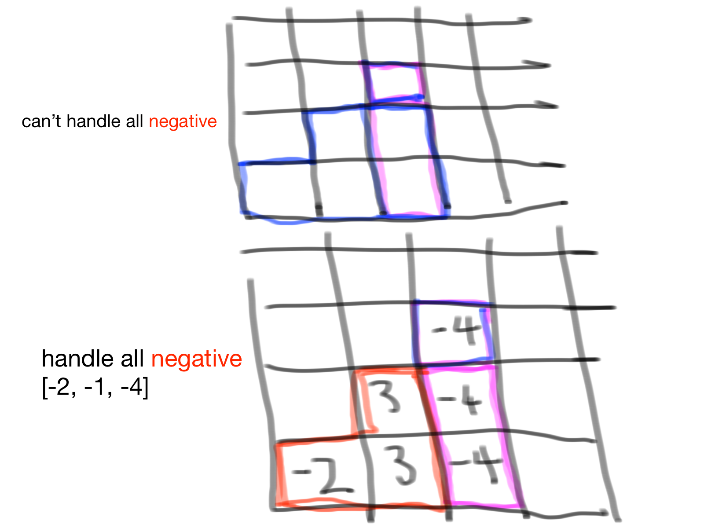

Maximum Continuous without start and end indexes
// Mon Dec 3 19:21:34 2018
// -1, 2, -1, 4
public static int continuousSum(int[] arr){
int max = 0;
if(arr != null){
int len = arr.length;
int cur = 0;
for(int i=0; i< len; i++){
if(cur < 0)
cur = 0;
cur = cur + arr[i];
// compare: [curr value, curr accumulator, max]
max = Math.max(max, arr[i]);
max = Math.max(max, cur);
}
}
return max;
}
Maximum Continuous Sum in a List
1. Find the maximum continuous sum from a list
2. Find the start index and end index
// Mon Dec 3 21:45:59 2018
// only work when not all elem are negative
//
// Sun Sep 25 18:03:40 PDT 2016
// Fix bug: start gets the wrong index
//
static int maxList(Integer[] arr) {
int tmp_start = 0;
int end = 0;
int start = 0;
int max = 0;
int sum = 0;
for(int i=0; i 0) {
int m = Math.max(arr[i], sum + arr[i]);
if(m > max) {
max = m;
start = tmp_start;
end = i;
}
sum += arr[i];
} else {
sum = 0;
}
}
Print.p("start[" + start + "]");
Print.p("end [" + end + "]");
return max;
}
1. Find the maximum continuous sum from a list
2. All the elements maybe be negative
public static int maxConsecutiveNegative(int[] arr) {
int max_so_far = arr[0], currMax = arr[0];
if(arr != null) {
for(int i=1; i< arr.length; i++) {
max_so_far = Math.max(arr[i], currMax + arr[i]);
currMax = Math.max(currMax, max_so_far);
}
}
return currMax;
}
